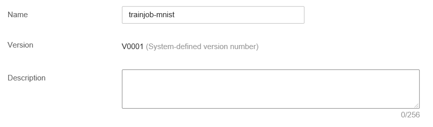
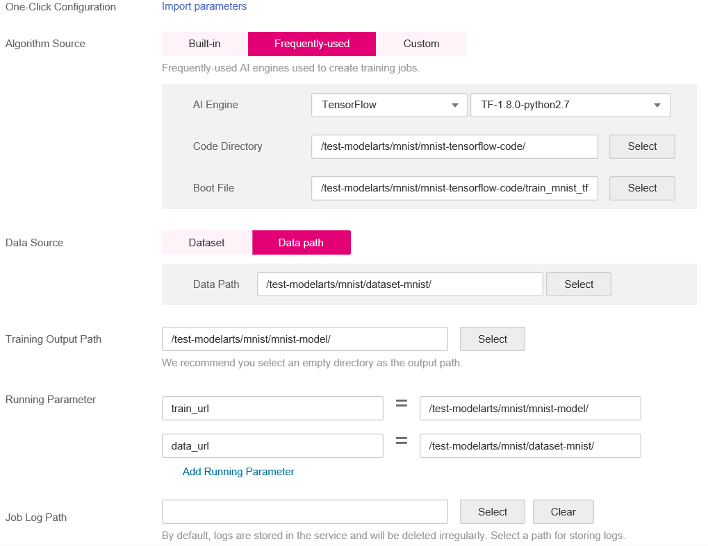
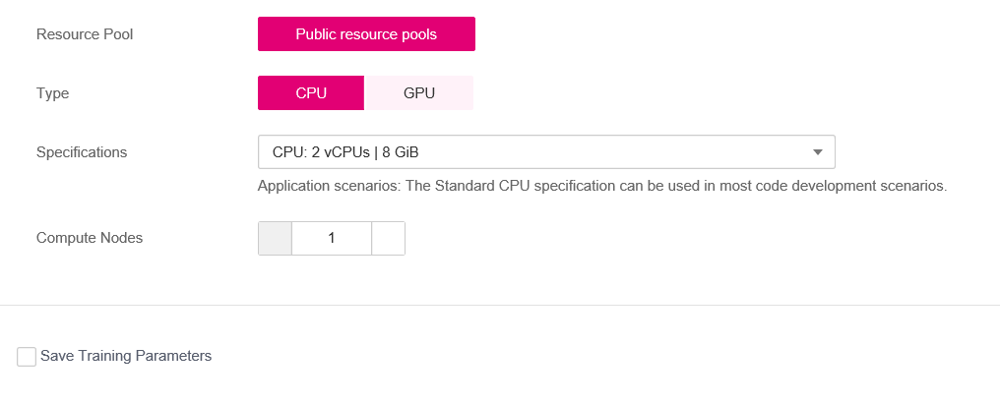
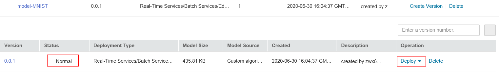
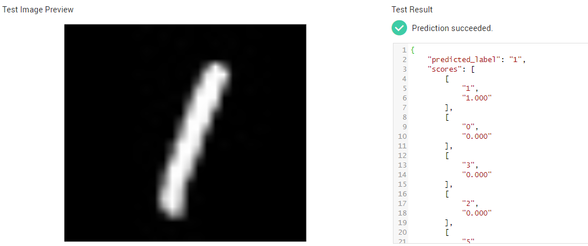

This section describes how to use TensorFlow to recognize handwritten digits in images from an MNIST dataset on the ModelArts platform.
Before using the following sample, complete necessary operations. For details, see Preparations. The following describes the process of using TensorFlow to recognize handwritten digits in images.
- Preparing Data: Obtain the MNIST dataset and upload it to OBS.
- Training a Model: Use the TensorFlow framework to compile the model training script and create a training job for model training.
- Importing a Model: After training is complete, import the model to ModelArts.
- Deploying a Service: Deploy the imported model as a real-time service.
- Performing Prediction: Initiate a prediction request and obtain the prediction result.
Preparations
- Obtain the AK/SK of the account and configure the AK/SK in Settings of ModelArts. For details, see Configuring Access Authorization (Global Configuration).
- You have created a bucket and folders in OBS for storing the sample dataset and model. In this example, create a bucket named test-modelarts and folders listed in Table 1.For details about how to create an OBS bucket and folder, see Creating a Bucket and Creating a Folder. Ensure that OBS and ModelArts are in the same region and belong to the same account.
Preparing Data
- t10k-images-idx3-ubyte.gz: validation set
- t10k-labels-idx1-ubyte.gz: labels of the validation set
- train-images-idx3-ubyte.gz: training set
- train-labels-idx1-ubyte.gz: labels of the training set
Training a Model
After data is prepared, use TensorFlow to compile the training script code. ModelArts provides a code sample, train_mnist_tf.py. The following uses this sample to train a model.
- Upload the training script train_mnist_tf.py to the test-modelarts/mnist/mnist-tensorflow-code directory listed in Table 1.
- On the ModelArts management console, choose Training Management > Training Jobs, and click Create in the upper left corner.
- On the Create Training Job page, set required parameters based on Table 2.
Table 2 Training job parameters Parameter
Description
Name
The value is specified by the system by default. You can change the value based on the site requirements, for example, trainjob-mnist.
Algorithm Source
Select frequently-used.
- AI Engine: TensorFlow, TF-1.8.0-python2.7
- Code Directory: Click Select and select the OBS directory where the training script is stored. Set this parameter to the upper-level directory of the training script.
- Boot File: Click Select and select the training script train_mnist_tf.py in the code directory.
Data Source
Select Data path and then select the OBS path for storing the dataset, that is, the data storage path described in Preparing Data.
Training Output Path
Set this parameter to the OBS directory created in Preparations for storing the trained model.
Running Parameter
Retain the default value. In this example, no other parameters need to be added.
Resource Pool
Select Public resource pools.
Type
Select CPU.
Specifications
Select CPU: 2 vCPUs | 8 GiB.
Compute Nodes
Set this parameter to 1.
Figure 1 Basic information for creating a training job
Figure 2 Parameters for creating a training job
Figure 3 Resource specifications selected for a training job
 - Check the parameters of the training job and click Create Now.
- On the Training Jobs page, when the training job status changes to Running Success, the model training is complete. If any exception occurs, click the job name to go to the job details page and view the training job logs.

The training job may take more than 10 minutes to complete. If the training time exceeds a certain period (for example, one hour), manually stop it to release resources. Otherwise, the account balance may be insufficient, especially for the training job using GPUs.
Importing a Model
After model training is complete, you can import the model to ModelArts and deploy the model as a real-time service. Before deploying a model, obtain Inference Code (customize_service.py) and Configuration File (config.json). The inference code and configuration file are sample files provided by ModelArts.
- Before deploying the model, upload the inference code and configuration file to the corresponding OBS path.
In this example, the OBS path for saving the outputted model is test-modelarts/mnist/mnist-model/model. Therefore, the inference script and configuration file need to be uploaded to this directory.
- Upload the files after the training is complete.
- If Training a Model fails, the training job will be executed for multiple times. In this case, different versions are generated. Directories of multiple versions are generated in the mnist-model directory, for example, V0001 and V0002. Upload the inference script and configuration file to the model folder of the corresponding version based on the version of the training job, for example, test-modelarts/mnist/mnist-model/V0002/model.
- On the ModelArts management console, choose Model Management > Models in the left navigation pane. On the Models page, click Import.
- On the Import Model page, set required parameters shown in Figure 4 and click Create Now.
Set Meta Model Source to OBS. Set Meta Model to the path specified by Training Output Path in the training job.
Table 3 Parameters for importing a model Parameter
Description
Name
Set the model name, for example, model-mnist.
Meta Model Source
Select Training job. Set Training Job and Version to the job and version created in the previous step. After a training job is selected, the configuration file and inference code in the corresponding directory are automatically identified.
Deployment Type
Select Real-time services.
Configuration File
The configuration file has been uploaded to the directory where the model is located. Therefore, the button is disabled by default.
Inference Code
The inference code has been uploaded to the directory where the model is located. The path of the inference code is automatically displayed.
Parameter Configuration
Click the POST area to view the input and output parameters of the model.
Runtime Dependency
Runtime dependency of the model
Min. Inference Specs
Minimum inference specifications. In this example, this parameter can be disabled.
Deploying a Service
- On the Models page, if the model status changes to Normal, the model has been imported successfully.
- Click the down arrow next to a model name to unfold all versions of the model. Locate the target version, and choose Deploy > Real-Time Services in the Operation column to deploy the model as a real-time service.Figure 5 Model list
 - On the Deploy page that is displayed, set the parameters shown in Figure 6, click Create Now, and create the real-time service as prompted.
After the service deployment task is started, go to the Real-Time Services page and wait until the service is deployed. The service deployment takes a couple of minutes. When the service status changes to Running, the service is successfully deployed.
Performing Prediction
- On the page, click the name of the real-time service to go to the service details page.
- Click the Prediction tab, click Upload next to Image File to upload an image with a white handwritten digit on a black background, and click Predict.
After the prediction is complete, the prediction result is displayed in the Test Result pane. According to the prediction result, the digit on the image is 1.
- As specified in the inference code and configuration file, the size of the image used for prediction must be 28 x 28 pixels, and the image must contain white handwritten digits on a black background.
- You are advised not to use the images provided by the dataset. You can use the drawing tool provided by the Windows operating system to draw an image for prediction.
Figure 7 Prediction results
 - If the model and real-time service are no longer required, you are advised to clear related resources.
- On the Real-Time Services page, choose More > Stop or Delete to stop or delete the created real-time service.
- On the Model Management page, choose More > Delete to delete the imported model.
- On the Training Jobs page, choose More > Delete to delete the finished training job.
- Go to OBS and delete the OBS bucket, folders, and files in this example.
Training Script (train_mnist_tf.py)
Copy the following code and name the code file train_mnist_tf.py. The code is a training script compiled based on the TensorFlow engine in Python.
from __future__ import absolute_import
from __future__ import division
from __future__ import print_function
import os
import tensorflow as tf
from tensorflow.examples.tutorials.mnist import input_data
tf.flags.DEFINE_integer('max_steps', 1000, 'number of training iterations.')
tf.flags.DEFINE_string('data_url', '/home/jnn/nfs/mnist', 'dataset directory.')
tf.flags.DEFINE_string('train_url', '/home/jnn/temp/delete', 'saved model directory.')
FLAGS = tf.flags.FLAGS
def main(*args):
# Train model
print('Training model...')
mnist = input_data.read_data_sets(FLAGS.data_url, one_hot=True)
sess = tf.InteractiveSession()
serialized_tf_example = tf.placeholder(tf.string, name='tf_example')
feature_configs = {'x': tf.FixedLenFeature(shape=[784], dtype=tf.float32),}
tf_example = tf.parse_example(serialized_tf_example, feature_configs)
x = tf.identity(tf_example['x'], name='x')
y_ = tf.placeholder('float', shape=[None, 10])
w = tf.Variable(tf.zeros([784, 10]))
b = tf.Variable(tf.zeros([10]))
sess.run(tf.global_variables_initializer())
y = tf.nn.softmax(tf.matmul(x, w) + b, name='y')
cross_entropy = -tf.reduce_sum(y_ * tf.log(y))
tf.summary.scalar('cross_entropy', cross_entropy)
train_step = tf.train.GradientDescentOptimizer(0.01).minimize(cross_entropy)
correct_prediction = tf.equal(tf.argmax(y, 1), tf.argmax(y_, 1))
accuracy = tf.reduce_mean(tf.cast(correct_prediction, 'float'))
tf.summary.scalar('accuracy', accuracy)
merged = tf.summary.merge_all()
test_writer = tf.summary.FileWriter(FLAGS.train_url, flush_secs=1)
for step in range(FLAGS.max_steps):
batch = mnist.train.next_batch(50)
train_step.run(feed_dict={x: batch[0], y_: batch[1]})
if step % 10 == 0:
summary, acc = sess.run([merged, accuracy], feed_dict={x: mnist.test.images, y_: mnist.test.labels})
test_writer.add_summary(summary, step)
print('training accuracy is:', acc)
print('Done training!')
builder = tf.saved_model.builder.SavedModelBuilder(os.path.join(FLAGS.train_url, 'model'))
tensor_info_x = tf.saved_model.utils.build_tensor_info(x)
tensor_info_y = tf.saved_model.utils.build_tensor_info(y)
prediction_signature = (
tf.saved_model.signature_def_utils.build_signature_def(
inputs={'images': tensor_info_x},
outputs={'scores': tensor_info_y},
method_name=tf.saved_model.signature_constants.PREDICT_METHOD_NAME))
builder.add_meta_graph_and_variables(
sess, [tf.saved_model.tag_constants.SERVING],
signature_def_map={
'predict_images':
prediction_signature,
},
main_op=tf.tables_initializer(),
strip_default_attrs=True)
builder.save()
print('Done exporting!')
if __name__ == '__main__':
tf.app.run(main=main)
Inference Code (customize_service.py)
Copy the following code and name the code file customize_service.py. The following inference code meets the ModelArts model package specifications.
from PIL import Image
import numpy as np
from model_service.tfserving_model_service import TfServingBaseService
class mnist_service(TfServingBaseService):
def _preprocess(self, data):
preprocessed_data = {}
for k, v in data.items():
for file_name, file_content in v.items():
image1 = Image.open(file_content)
image1 = np.array(image1, dtype=np.float32)
image1.resize((1, 784))
preprocessed_data[k] = image1
return preprocessed_data
def _postprocess(self, data):
outputs = {}
logits = data['scores'][0]
label = logits.index(max(logits))
logits = ['%.3f' % logit for logit in logits]
outputs['predicted_label'] = str(label)
label_list = [str(label) for label in list(range(10))]
scores = dict(zip(label_list, logits))
scores = sorted(scores.items(), key=lambda item: item[1], reverse=True)[:5]
outputs['scores'] = scores
return outputs
Configuration File (config.json)
Copy the following code and name the code file config.json. The configuration file meets the ModelArts model package specifications.
{
"model_type":"TensorFlow",
"metrics":{
"f1":0,
"accuracy":0,
"precision":0,
"recall":0
},
"dependencies":[
{
"installer":"pip",
"packages":[
{
"restraint":"ATLEAST",
"package_version":"1.15.0",
"package_name":"numpy"
},
{
"restraint":"",
"package_version":"",
"package_name":"h5py"
},
{
"restraint":"ATLEAST",
"package_version":"1.8.0",
"package_name":"tensorflow"
},
{
"restraint":"ATLEAST",
"package_version":"5.2.0",
"package_name":"Pillow"
}
]
}
],
"model_algorithm":"image_classification",
"apis":[
{
"procotol":"http",
"url":"/",
"request":{
"Content-type":"multipart/form-data",
"data":{
"type":"object",
"properties":{
"images":{
"type":"file"
}
}
}
},
"method":"post",
"response":{
"Content-type":"multipart/form-data",
"data":{
"required":[
"predicted_label",
"scores"
],
"type":"object",
"properties":{
"predicted_label":{
"type":"string"
},
"scores":{
"items":{
"minItems":2,
"items":[
{
"type":"string"
},
{
"type":"number"
}
],
"type":"array",
"maxItems":2
},
"type":"array"
}
}
}
}
}
]
}